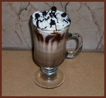

The Coffee Corner

Coffee’s World Culture
Middle East
Coffee first exploded in the Middle East after it was brought over to Turkey around the year 1000 AD. The coffee craze spread quickly and as early as the 15th century people were enjoying coffee shops. The first coffee shop in the world was called Kiva Han and opened in Constantinople in 1475. But even back in the 15th century coffee houses were centers for political and religious debate, a trend that would continue throughout the world. The threat of the subversive political debates was so great that Sultan Amurat III had every coffee shop closed and the owners tortured!2
Just like today, people were very obsessive about their coffee during this time period. This is evident in old, fashionable Turkish coffee houses, which were men’s clubs (like today’s cigar/drinking clubs) where members discussed intellectual and artistic affairs. These coffee clubs are seen as forerunners of the Paris cafes.4
Interesting Fact: “Turkish law made it legal for a woman to divorce her husband if he failed to provide her with her daily quota of coffee.”2
From the beginning of coffee in the Middle East, the entire process of coffee making was ritualistic, from the roasting of the bean to the serving of the guests. Even today, girls will prepare and serve coffee for their prospective fiancé’s parents as a display of her domestic skills.4
Coffee was even a major tool in fortune telling in a process called coffee grind reading. To read coffee grounds, a fortune teller turns a finished cup of coffee upside down for a period. After a while, the professional fortune teller “reads” the coffee residue and grounds to make predictions. This ritual is still practiced today throughout the Middle East.4
Europe
The first coffee shop Europeans built was opened in Germany during 1673 in Bremen. This shop was successful enough that another one opened in Hamburg four years later. After this shop opened, the coffee craze officially spread throughout the entirety of Germany. During this period was when the world famous coffee shops and coffee culture of Vienna began.1
Interesting Fact: Coffee was brought to Vienna in 1683 when the Turks raided the capital city. When the foreign troops were repelled, they left behind 500 sacks of raw coffee beans.1
When coffee first arrived in Vienna, the bitter taste of Turkish coffee turned off the Viennese. Because of the dislike, coffee houses first began to add ingredients to their coffee drinks to make them more universally appealing. These additions to the coffee weren’t just sugar, cream, and water like we use mainly today, but any sweet substance to make the coffee drinkable.1
One of the popular early drinks was called the Vienna Melange, which was a Turkish brew mixed with cream and honey. When these and other sweet ingredients were offered regularly in coffee shops, the coffee culture exploded in Vienna. With their interesting accompaniments, Vienna coffeehouse culture remains one of the most distinct in the world.1
In Germany, coffee culture was increasing greatly too as coffeehouses became a usual place to meet colleagues over coffee and biscuits to discuss intellectual and artistic endeavors. Musical entertainment was brought in to make the experience more enlightening and as such, concerts and coffee houses were quite commonplace.1
Interesting Fact: Johann Sebastian Bach first performed his famous Coffee Cantata in a coffee house in 1732.1
Interestingly, because of the addictive nature and obsessions of coffee, laws controlling coffee beans were very strict, essentially made a monopoly by the government. As a way to counteract that government control, coffee was smuggled in on the black market through coffins, which customs officers were afraid to search because of leprosy!1
Latin America
In terms of sheer amount, coffee is the second most important commodity used in global trading. This is nowhere more true than in Latin American countries like Costa Rica, Brazil, Colombia, and Mexico, where coffee is their biggest export.2
After being brought over by the Europeans, coffee was grown in personal estates in Latin American countries. Because of an improved transportation system and an increase use of slave labor, Brazil’s coffee production dominated world markets. Brazil had such a large influence in coffee production that until the end of World War II, three quarters of the world coffee market was supplied by Brazil.2
Interesting Fact: Coffee arrived in Brazil when Lieutenant Colonel Francisco de Melo Palheta brought back flowers from French Guiana for his love. Inside the bouquet were fertile coffee seeds!2
Sources:
1. “Coffee Through the Ages”, <http://company.tchibo.de/concepts/tccom_302.jsp>, accessed November 12, 2006.
2. Empire Coffee and Tea Company, “Cool, Savvy History of Coffee”, <http://www.empirecoffeetea.com/historyF.htm>, 1995, accessed November 12, 2006.
3. HollandbyMail, “Learn About the History of Coffee”, http://www.hollandbymail.com/coffee/coffee_history.html, 1998-2003, accessed November 12, 2006.
4. Turkoglu, Sabahattin, “Traditional Turkish Coffee”, <http://www.koffeekorner.com/turkish.htm>, 2000, accessed November 12, 2006.
Last Updated: Monday, 27-Nov-2006 7:09 PM
|